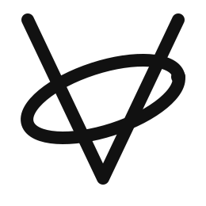

一门动态类型的脚本语言——类 JavaScript 语法，Lua 级的简单性，Wren 式的面向对象。
跨平台构建，零外部依赖。支持 Windows、Linux、macOS 多架构与原生打包。
类 C 语法，大括号定义块，分号可选。运算符沿用 C 惯例（&&、||、!）。标识符支持 Unicode（中文、日文等）。
let n = 42 // Int (64-bit) let f = 3.14 // Float (64-bit) let s = "hello" // UTF-8 字符串 let a = [1, 2, 3] // 动态数组 let d = {k: "v"} // 字典 let nothing = null // 数字前缀：0xFF 0o77 0b101
func add(a, b) { return a + b } // 闭包直接修改外层变量 func makeCounter() { let n = 0 return func() { n += 1; return n } } // 默认参数 + 命名参数 func greet(name, g = "Hello") { ... } greet(name="Vora", g="Hi")
if (x > 0) { ... } else { ... } while (n > 0) { n -= 1 } do { n += 1 } while (n < 5) for item in [1,2,3] { print(item) } for i in range(10) { print(i) } for (let i=0; i<5; i+=1) { ... }
Obj Animal(name) { this.name = name func speak() { print("...") } } Obj Dog : Animal (name, breed) { this.breed = breed func speak() { print("Woof! I'm " + this.name) } } let d = Dog("Rex", "Husky")
let grade = match score { 90..=100 => "A", 80..=89 => "B", 70..=79 => "C", _ => "F" } func describe(n) { return match n { 0 => "zero", 1 => "one", _ => "many" } }
try { throw "出错了" } catch (e) { print("捕获: " + e) } finally { print("始终执行") } // 模块系统 import "math" from "math" import PI, sin, cos export func main() { ... }
纯 C++17 实现，STL 以外无外部依赖。面向嵌入场景设计，可作为 C++ 项目的脚本引擎使用。
纯 C++17 + STL。一个 vora.hpp 单头文件即可嵌入任何 C++ 项目。
基于栈的虚拟机，50+ 条指令。支持快速数值操作码、全局变量驻留、常量折叠。
C3 线性化多继承、super 调用、自动 this 绑定。不是 metatable 模拟——是真正的类系统。
math、json、fs、os、datetime、array、string、regex——覆盖日常开发核心场景。
CMake 预设覆盖 Windows (x64/x86/arm64)、Linux (x64/x86/aarch64/armhf)、macOS Universal。
328 个 C++ 单元测试（1019 断言）+ 71 个脚本测试 + 56 个示例，全部通过。
从词法分析到字节码执行，每个模块职责单一。标准库与核心引擎解耦，按需加载。